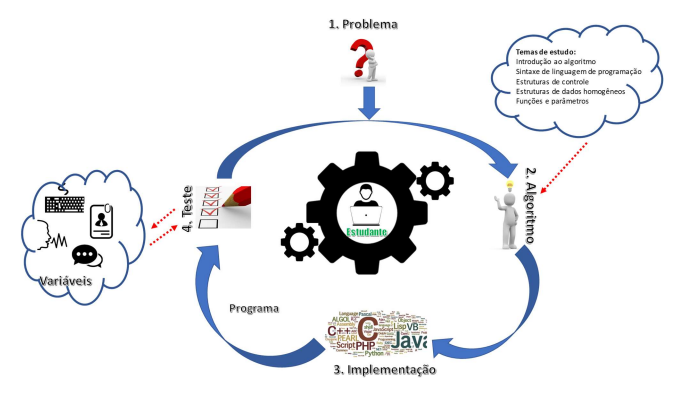
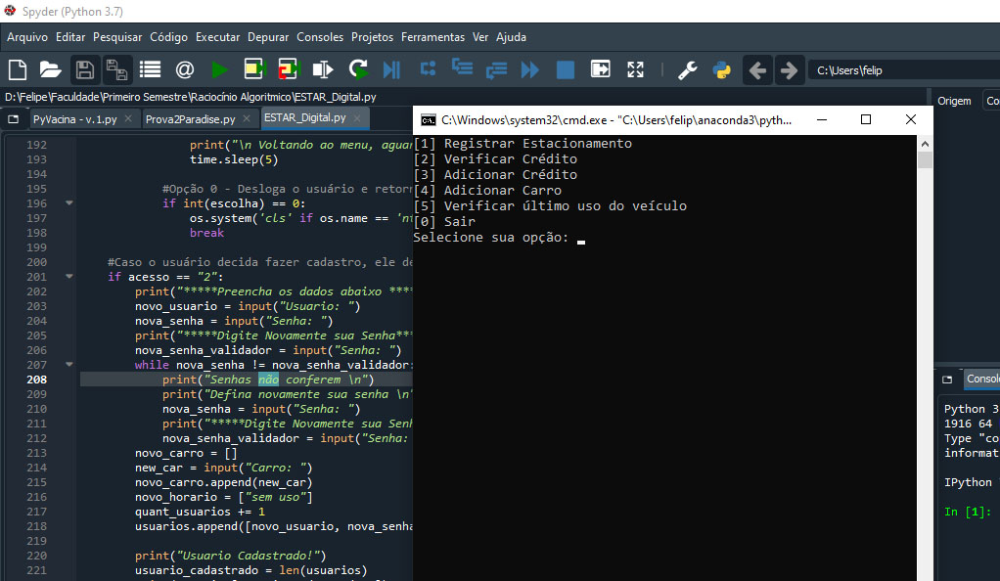
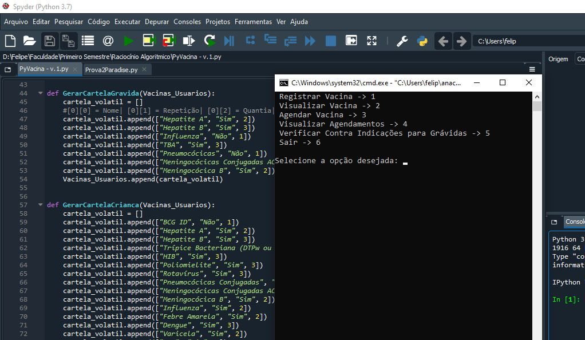

Raciocínio Algorítmico
|
Ministrado por Dr. Emerson Cabera Paraiso, a disciplina de Raciocínio Algorítmico é de natureza teórico-prática, sendo ofertada no primeiro período dos cursos da Computação. Os estudantes fazem uso de sequencias de regras para resolver problemas bem definidos, planejam e escrevem a solução na forma de um algoritmo computacional e testam os programas desenvolvidos. Para a resolução dos problemas identificam variáveis e aplicam estruturas de controle e funções adequadas ao problema proposto. Ao final da disciplina o estudante implementa soluções computacionais e resolve problemas de baixa complexidade utilizando uma linguagem de programação. |
 |
|
Projetos Realizados |
|
|  |
O primeiro projeto proposto, desenvolvido em parceria com meu colega Felipe Correa, era a implementação de um aplicativo que funcionasse como um Estar Digital. Sendo obrigatório a utilização da linguagem Python, o programa deveria permitir que o usuário fizesse seu cadastro a partir da inserção de alguns dados básicos, e após cadastrar seu carro, ele poderia utilizar o sistema para registrar o carro em uma vaga de estacionamento, podendo ser cobrado diretamente pelo aplicativo, fazendo-se necessário a implementação de uma carteira digital para administração do dinheiro. |
|
O segundo e último projeto proposto, desenvolvido em parceria com meus colegas Felipe Correa e Ulisses Filho, era a implementação de um aplicativo que funcionasse como um cartão de vacinação pessoal. Sendo obrigatório a utilização da linguagem Python, o sistema permitia o cadastro do usuário, e logo em seguida utilizava dados como idade e sexo para determinar a cartela da vacinação adequada para cada pessoa. Dentre as funcionalidades existes, o usuário poderia registrar uma vacina que ja tomou, visualiazar as vacinas tomadas, agendar novas vacinas, ver os agendamentos efetuados e como uma funcão bonus disponível para todos, poderia ver as vacinas contra indicadas para pessoas grávidas. |
 |

Copyright © 2020 by Eduardo Verbinen